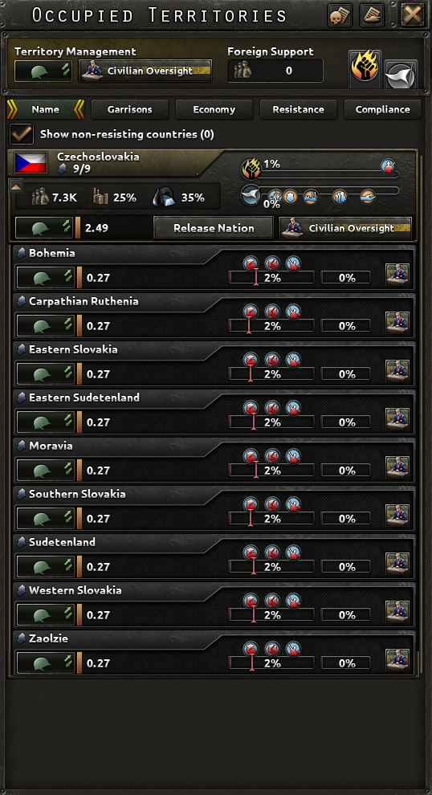

占领
原页面：Occupation

各州按抵抗度分为三大类：核心州（游戏内也称本国领土）、被占领州和殖民地州。被占领州启用了抵抗，而殖民地州没有。如果某个核心州开启了抵抗（无论是通过 mod 修改了启用抵抗的条件，还是通过效果强制启用，例如“在不列颠煽动工人革命”行动），它会被列为被占领州，但仍不会承受适用于非核心州的人力或建筑槽位等惩罚。
如果某个州在游戏开始时没有抵抗，那么它将一直处于禁用状态，除非该州[1]易主，或另一机制将其启用（例如各种埃塞俄比亚决议会在非洲和阿拉伯的某些殖民地州启用抵抗）。
如果某个州易主，或者抵抗已经存在，游戏每天都会通过检查以下条件来决定它是否继续存在：[1]
- 该州不是不可通行地形
- 该州不是控制国的核心州
- 要么有任何国家以该国为声称核心，要么该州在游戏开始时属于
 西班牙，并且在内战结束后被一个源自西班牙的国家占领。
西班牙，并且在内战结束后被一个源自西班牙的国家占领。
抵抗度
抵抗系统基于抵抗强度，抵抗强度会缓慢地朝抵抗目标增长或衰减。
抵抗强度
抵抗强度衡量民众对控制国占领该州的抵抗程度。该州被占领时，初始抵抗度设为 1%，[2]此后它会朝抵抗度目标上升或下降。如果该州不应再有抵抗，抵抗会以每天 -0.25%[3]的速度衰减至 0。抵抗强度被限制在 0.01%[4]至 100% 之间。[5]它会影响施加于该州的减益、抵抗行动的频率与严重程度。当抵抗强度达到某些阈值时，各种减益会按州开始生效：[6]
| 名称 | 所需抵抗等级 | 效果 |
|---|---|---|
| 有组织的抵抗 | 25% |
|
| 壮大的抵抗 | 50% |
|
| 起事 | 75% |
|
| 叛乱 | 90% |
|
抵抗度目标
抵抗目标
- 抵抗目标基础值：+35%[7]
- 目标国已投降[a]：+10%[8]
- 目标国拥有流亡政府：+2%[9]，再加上+0.18%，每合法性的流亡政府，最多总计+20%[10]，在 100%合法性时
- 控制国拥有声称：-5%[11]
- 控制国处于和平状态：-10%[12]
- 州内胜利点：[13]
- 0–4 VP：0%
- 5–19 VP：+5%
- 20–49 VP：+10%
- 50+ VP：+20%
- 来自州内顺从度：每 1% 顺从度提供-0.5%[14]，最多-50%。
- 来自控制国稳定度：稳定度每低于 100% 一个百分点提供-0.2%[15]（0% 稳定度时最多
 +20%）
+20%） - 州人口少于 1000[16]：-50%[17]
- 州人口在 1000[16]至 10000[18]之间：-20%[19]
- 修正或效果，例如以下这些：[b]
- 从抵抗目标更高的相邻州扩散而来，扩散量为差值的一部分。只能选择一个州作为扩散来源，并会选取差值最大的那个。此时，差值是在该州的抵抗目标（扩散前）与相邻州在未扩散时的抵抗目标，或仅加上其已获得扩散量之后的抵抗目标之间计算的。+0.5%[24]
- 例如，一个抵抗目标为 70% 的州与一个抵抗目标为 10% 的州相邻，会把后者总目标提高到 40%，即加上 10% 与 70% 差值的一半。如果另一个抵抗目标为 10% 的州与现在目标为 40% 的州相邻，它会通过 10% 基础值与来自第一个州的 30% 扩散量之间差值的一半，提高到 20%。
在大多数这些修正的作用下，抵抗目标最多只能降到 10%[25]，只有顺从度才能把它进一步压到 0。如果抵抗降到 0，那么只有抵抗目标重新达到 10%[26]时抵抗才会再次启用。
抵抗的增长与衰减
如果抵抗强度与抵抗目标不符，它会逐渐朝抵抗目标变化。若抵抗强度在上升，这称为抵抗度增长；若在下降，则称为抵抗衰减。默认情况下，抵抗增长每天使其增加0.2%[27]，抵抗衰减每天使其减少-0.1%[28]。对它们的进一步修正以乘法方式生效。
如果该国对被占领州拥有声称，抵抗衰减会提高+25%[29]。抵抗强度低于 10 时，衰减变化为-50%；强度低于 20 时，衰减变化为-25%。[30]
在修正方面，有以下几种改变它的方式：[b]
- 流亡政府的“援助抵抗的武器”国家精神会使拥有该精神的国家的核心州内抵抗增长提高+10%。
- 大规模突击学说分支中的
 游击战陆军学说会使拥有该学说的国家的核心州内抵抗增长提高+25%。
游击战陆军学说会使拥有该学说的国家的核心州内抵抗增长提高+25%。  残酷镇压占领法令法西斯主义者
残酷镇压占领法令法西斯主义者 可使+100%在其适用州内的抵抗衰减提高。
可使+100%在其适用州内的抵抗衰减提高。
抵抗活动
在抵抗存在的每一天，游戏都会判定是否发生抵抗活动。某州发生抵抗活动的几率按+0.312%提高，每1%抵抗，最高为+31.2%，在100%抵抗时。[31]
每当某州发生抵抗活动，当地游击队会攻击并摧毁该州驻军装备的2%[32]和该州驻军人力的1.6%[33]。装备损失按驻军当前满足率施加于驻军当前使用的所有装备，并对所有装备类型向上取整。壮大的抵抗会同时增加对装备和人力的潜在伤害。某些国家精神、占领法令、政治顾问和陆军学说可以增减在某些被占领州对驻军造成的伤害。驻军编制的硬度会按-1%减少两类伤害，每1%硬度，最多减少-90%[34]，在硬度达到或超过90%时。无论驻军实际拥有多少装备，这种减免都会生效。[35]例如，一个含重型坦克营的驻军编制即使该国没有重型坦克来满足驻军的装备请求，其伤害也会被减免。它还会与其他驻军伤害减免来源加算叠加，总伤害减免上限为-90%。 [36]这意味着当来自国家精神、占领法令、政治顾问等的伤害减免来源足够多时，额外的驻军硬度实际上会被浪费。
[36]这意味着当来自国家精神、占领法令、政治顾问等的伤害减免来源足够多时，额外的驻军硬度实际上会被浪费。
除了对驻军造成伤害之外，抵抗活动还有几率“突破”驻军，对当地的 基础设施、
基础设施、 民用工厂或
民用工厂或 军用工厂造成破坏。基础几率为每次抵抗活动2%[37]，但可以通过有组织的抵抗提高。某些独特的国家精神和政治顾问可以降低驻军被突破的几率。
军用工厂造成破坏。基础几率为每次抵抗活动2%[37]，但可以通过有组织的抵抗提高。某些独特的国家精神和政治顾问可以降低驻军被突破的几率。
顺从度
顺从度体现非核心领土民众对占领政权的忠诚程度。游戏内的数值代表当地人口中忠于占领者的比例。
顺从度按州单独计算并带有各自的本地效果，同时在达到某个平均阈值时为被占领土地提供整体加成。
被占领州的顺从度初始为0%[38]。一旦某州投降或被吞并，如果事先已准备好合作政府，其所有原有州的初始顺从度将提高到该国的合作度百分比。游戏开始时的非核心州默认以 70%[39]顺从度起步。如果非核心州更换所有者，新所有者将获得原所有者在该州顺从度的0.5 倍[40]。
顺从度获取
顺从度基础增长默认为每天0.075%[41]，但会受到占领法令、某些国家精神和领袖特质的修正。以下数值会修改它：
顺从度增长可以通过以下来源的顺从度增长来提高：
它会受到顺从度衰减的抵消。顺从度衰减有两个主要来源，两者都在顺从度增长修正被计入顺从度增长之后才应用：
- 现有顺从度：每点现有顺从度每天-0.00083%，100% 顺从度时每天最多-0.083%[45]
- 该州是具有流亡政府的国家的核心州：每天-0.00015%，每合法性的流亡政府，每天最多-0.015%[46]，在 100%合法性时
建立合作政府会把被占领州转为傀儡国并免除抵抗，从而使顺从度变得不必要。
顺从度与工业
顺从度为州内可用工厂（ 民用工厂、
民用工厂、 军用工厂、
军用工厂、 海军船坞）提供加成。公式如下：
海军船坞）提供加成。公式如下：
- : \text Factories available = 100\% - 75\% + 65\% · \text Compliance level
（炼油厂不受此影响，它们始终按科技水平产出最大数量的燃料和橡胶，燃料储罐同理）
被占领州提供的资源与人力也是如此：
- : \text Resources available = 100\% - 65\% + 65\% · \text Compliance level
- : \text Manpower available = 100\% - 98\% + 18\% · \text Compliance level
各州之间的平均顺从度水平还会提供固定百分比加成：
| 名称 | 所需顺从度等级 | 效果 |
|---|---|---|
| 线人 | 15% | 敌方特工被发现几率偏移： +25% |
| 地方警察部队 | 25% |
所需驻军： -25% 额外可招募人口： +0.5% |
| 重组劳动力 | 40% |
本地资源： +10% 本地工厂： +10% |
| 志愿计划 | 60% | 可征召人口： +20% |
| 新政权 | 80% | 触发事件以建立合作政府 |
得益于上述修正，处于 100% 顺从度的州默认会向占领国提供其 100% 的工厂、105% 的资源和 40.5% 的人力。
以下因素也会影响被占领州所提供的工厂、资源和人力数量：
虽然能获得超过某州 100% 的工厂或资源通常是暂时现象，因为顺从度衰减最终会超过顺从度增长，但在某些情况下并非如此。某些国策、政治顾问以及针对特定国家的决议可以使顺从度增长压倒更具掠夺性的占领法令所带来的额外顺从度衰减。尤其是 秘密警察、共产主义专属的 解放的工人以及意大利特有的
解放的工人以及意大利特有的 殖民地警察占领法令，它们都提供额外的工厂和资源，同时顺从度增长削减足够低，很容易被额外的顺从度增长来源所压倒。
殖民地警察占领法令，它们都提供额外的工厂和资源，同时顺从度增长削减足够低，很容易被额外的顺从度增长来源所压倒。
小数工业
小数工厂和资源会按每座工厂和每种资源类型向下取整。在游戏启动时，它们还会按 tag 分组并采用不同的取整方式，但游戏进行几天后、占领所得的工厂首次重新计算时，这一点就会被修正。
例如，1936 年的 英属印度以 70% 顺从度占领许多不同的州，从而可以使用这些州 80% 的工厂。这包括来自西印度诸邦的 1 座军用工厂
英属印度以 70% 顺从度占领许多不同的州，从而可以使用这些州 80% 的工厂。这包括来自西印度诸邦的 1 座军用工厂 、来自迈索尔的 1 座民用工厂
、来自迈索尔的 1 座民用工厂 、来自海得拉巴的 2 座民用工厂以及来自巴基斯坦的 2 座
、来自海得拉巴的 2 座民用工厂以及来自巴基斯坦的 2 座 民用工厂。名义上这合计为来自被占领州的 0.8 座军用工厂和 4 座民用工厂，应向下取整为 0 座军用工厂和 4 座民用工厂。实际上，由于前述不同的取整方式，
民用工厂。名义上这合计为来自被占领州的 0.8 座军用工厂和 4 座民用工厂，应向下取整为 0 座军用工厂和 4 座民用工厂。实际上，由于前述不同的取整方式， 英属印度在 1936 年 1 月 1 日只从占领中获得 0 座军用工厂和 3 座民用工厂，但几天之后其占领所得工厂数会重新计算，它们便会得到应得的 0 座军用工厂和 4 座民用工厂。
英属印度在 1936 年 1 月 1 日只从占领中获得 0 座军用工厂和 3 座民用工厂，但几天之后其占领所得工厂数会重新计算，它们便会得到应得的 0 座军用工厂和 4 座民用工厂。


合作政府
 合作度数值代表当地民众与占领者合作并提供协助的意愿。合作是遏制并消除抵抗的必要条件。合作分为两个阶段：地方合作与合作政府。地方合作通过“建立合作政府”秘密行动获得，并提供以下效果：
合作度数值代表当地民众与占领者合作并提供协助的意愿。合作是遏制并消除抵抗的必要条件。合作分为两个阶段：地方合作与合作政府。地方合作通过“建立合作政府”秘密行动获得，并提供以下效果：
- 每次使用使被占领州的初始顺从度提高 30–45%，最高可达100%合作度（例如 70% 合作度会给你 70% 顺从度）
- 降低投降所需的投降进度阈值
当前合作度数值可在国家界面的“合作政府”标签页中查看。
如果所有被占领州的平均地方合作度升到 80%，占领国将有机会扶植一个由忠诚且同情的当地平民组成的合作政府，来管理和治理被占领土。备注民主国家不能建立合作政府。合作政府本身是一种特殊类型的傀儡国，需拥有《抵抗运动》DLC，并具有以下傀儡规则：
 可以宣战
可以宣战- 可拒绝参战号召
- 已部署部队的控制权归宗主国
- 可建立合作政府
- 可成为特工大师
- 向特工首脑提供特工
 宗主国可在附属国领土上建造建筑
宗主国可在附属国领土上建造建筑- 科技共享加成-50%
- 附属国人力征用要求：+100%
- 对宗主国的额外贸易：+100%
- 宗主国贸易花费：-90%
- 交给宗主国的民用工业：+75%
- 交给宗主国的军用工业：+75%
- 转交给宗主国的和平会议得分：+20%
- 来自傀儡国的租借紧张度上限：-10%
一旦建立，合作政府就是一个独立的 tag，并会获得通用国策树供其使用，除非其核心州对应的对立国不存在。此外，合作政府还会在其旨在代表的国家的每一个核心州上获得核心，无论合作政府实际控制哪些领土。
合作政府会采用宗主国的颜色，并在其名称中使用宗主国的形容词，以体现两国政府之间的紧密联系。不过，该傀儡国会获得它旨在代表的国家的科研进度。如果你为一个默认使用通用国策树的 tag 建立合作政府，你的合作政府也会继承通用国策树的进度，即使该国依然存在。
例如，如果 日本建立一个代表中国
日本建立一个代表中国 的合作政府于冀东（开局由日本控制），该合作政府将被命名为“日本中国”，并在每一个中国核心州上获得核心，同时地图颜色与日本相同。但如果建立合作政府时
的合作政府于冀东（开局由日本控制），该合作政府将被命名为“日本中国”，并在每一个中国核心州上获得核心，同时地图颜色与日本相同。但如果建立合作政府时 中国并不存在，合作政府将取代中国
中国并不存在，合作政府将取代中国 的角色，包括其国策树。
的角色，包括其国策树。
目前，每个州的顺从度只会从一个 tag 进行检查。如果该州的所有者对其拥有核心，则所有者就是顺从度的目标；否则就取核心列表中排在最左侧的旗帜。可以通过吞并中国军阀来验证这一点： 中国会先于军阀们获得核心，这意味着抵抗将针对它们。
中国会先于军阀们获得核心，这意味着抵抗将针对它们。
例如，如果 日本在中国共产党境内建立合作网络，那么仅对陕西州而言，合作度会从中国共产党计入日本
日本在中国共产党境内建立合作网络，那么仅对陕西州而言，合作度会从中国共产党计入日本 。随后它们可以立即被释放为合作政府，因为中国共产党在日占中国其他州中的合作度不会被检查，那些州的合作度是从中国计入
。随后它们可以立即被释放为合作政府，因为中国共产党在日占中国其他州中的合作度不会被检查，那些州的合作度是从中国计入 日本的。释放时它们只会获得据以计算其顺从度的省份，但仍保留其他核心。
日本的。释放时它们只会获得据以计算其顺从度的省份，但仍保留其他核心。


这一机制会阻止某些作为他国核心的既有 tag 成立，例如马其顿、克罗地亚、奥克西塔尼亚、阿尔及利亚等。它们无法被组建为合作政府（除非被释放、攻击并吞并），只能作为普通傀儡国释放。这也会阻止在释放国拥有核心的省份中组建合作政府，不过这些省份最终会随合作政府一同被释放。举例来说，如果意大利建立一个南斯拉夫合作政府，那么它将失去对伊斯特拉的控制权和核心，该地会在 南斯拉夫中割让给合作政府。
南斯拉夫中割让给合作政府。


由于合作政府在其领土上拥有核心，宗主国无需驻军该领土，抵抗也不会形成。
合作政府无法由现有傀儡国建立，在由 AI 控制时它们自身也无法提升自治度。但在由玩家控制时，它们可以提高自身自治度并成为普通傀儡国，从而最终通过正常的傀儡自治阶梯获得独立。
驻军
为了对抗抵抗并维持治安，被占领州需要由军事部队驻守以执行警察任务。游戏内的驻军即体现这一点，可从“被占领土”标签页进行指派。
用于填充驻军的师不会显示在地图上，它们会被自动分配并自动获得装备。装备分配可通过“招募与部署”对话框设置。
占领法令的效果按驻军效率缩放。如果驻军补充命令未得到满足，占领法令的所有效果都会按该数值缩放：[47]
- : \text Modifier = 100\% - \text max(\text (Manpower requirement)^2 \text ; (Equipment requirement)^3)
每一点抵抗，占领国在每个州都需要 0.75[48]点镇压。不过即使抵抗强度低于 10%[49]，所需驻军数量仍按 10% 计算。当抵抗强度升到 50%[50]以上时也是同样机制，从而为高抵抗州所需的镇压量设定了上限。
占领法令
占领法令可以在一个国家的被占领（即非核心）领土中选择。它们可以按全国、按被占领国或按州指派。它们调节抵抗目标、顺从度生成速率、以及玩家在其适用州内可获得的工业与资源数量。某些占领法令还会提供若干其他独特优势。
| 名称 | 抵抗度目标 | 顺从度获取 | 所需驻军 | 驻军所受伤害 | 本地资源 | 本地工厂 | 额外效果 | 备注 |
|---|---|---|---|---|---|---|---|---|
| 无驻军 | +40% | – | -100% | – | – | – | 顺从度变动被禁用 | – |
| 文官监督 | – | – | -25% | -25% | – | – | – | – |
| 地方警察部队 | -15% | -0.025% | -35% | -50% | – | – | – | – |
| 秘密警察 | -30% | -0.04% | -15% | -15% | +5% | +5% |
敌方情报网强度获取：-25% 敌方特工被发现几率偏移：+1% |
– |
| 军事总督 | -35% | -0.045% | – | – | +10% | – | 本地人力+8% | – |
| 强制劳动 | -40% | -0.08% | +15% | +30% | +40% | +5% |
民用工厂修复速度：+25% 资源破坏几率：-25% 资源破坏持续时间：-25% |
– |
| 严苛配额 | -40% | -0.08% | +15% | +50% | +5% | +25% |
军用工厂修复速度：+25% 民用工厂修复速度：+25% 军用工厂破坏几率：-25% 民用工厂破坏几率：-25% |
– |
| -60% | -0.055% | – | – | +10% | – | – | – | |
| -75% | -0.11% | +25% | +100% | +10% | – | 抵抗衰减速度： +100% | 法西斯主义者专属 | |
| 解放的工人 | -15% | -0.025% | -15% | +25% | +30% | +20% | – | 共产主义者专属 |
| 地方自治 | +10% | +0.02% | -40% | -25% | – | – | – | 民主国家专属 |
| – | +0.03% | -50% | -30% | – | – | 抵抗衰减速度： +50% | 仅 | |
| 殖民地警察 | -30% | -0.02% | -30% | -40% | – | – | – | 仅 |
| 殖民地警察（改进） | -35% | -0.015% | -35% | -45% | +25% | +25% | – | 仅 |
| 殖民地警察（最终） | -45% | -0.010% | -40% | -55% | +25% | +25% | 本地人力+5% | 仅 |
| 总书记们 | -30% | -0.020% | -30% | -40% | – | – | – | 仅 |
| 独立统治 | -10% | +0.03% | -50% | -50% | -35% | -35% | – | 仅 |
| 土邦征服 | +60% | -0.10% | +15% | -10% | +60% | +60% | – | 仅 |
| 宣抚 | -20% | +0.01% | +5% | -35% | -10% | -10% | – | 仅 |
| 东亚掠夺 | -40% | -0.08% | +30% | +60% | +60% | +20% |
军用工厂修复速度：+25% 民用工厂修复速度：+25% 军用工厂破坏几率：-25% 民用工厂破坏几率：-25% |
仅限 |
| 东亚繁荣 | -15% | - | +5% | -25% | +5% | +10% | – | 仅 |
参考文献与注释
^a: 比投降更严格：目标不得控制任何州。^b: 有大量效果和修正会修改它，其中许多是特定国家专属的。此处只选取了在任何国家游玩时都能修改它的效果和／或修正。^c: 如果发起该行动的国家已完成“出口破坏者”国策，无加成时的抵抗目标会变为+25%。
- ↑ 1.0 1.1
should_initiate_resistance脚本触发器，默认位于/Hearts of Iron IV/common/scripted_triggers/00_resistance_initiate_triggers.txt - ↑
NDefines.NResistance.INITIAL_STATE_RESISTANCE = 1中的 定义文件。 - ↑
NDefines.NResistance.RESISTANCE_COOLDOWN_WHEN_DISABLED = -0.25中的 定义文件。 - ↑
NDefines.NResistance.RESISTANCE_DECAY_MIN = 0.01中的 定义文件。 - ↑
NDefines.NResistance.RESISTANCE_GROWTH_MAX = 100中的 定义文件。 - ↑ 由/Hearts of Iron IV/common/resistance_compliance_modifiers/*.txt文件决定。
- ↑
NDefines.NResistance.RESISTANCE_TARGET_BASE = 35中的 定义文件。 - ↑
NDefines.NResistance.RESISTANCE_TARGET_MODIFIER_OCCUPIED_CAPITULATED = 10中的 定义文件。 - ↑
NDefines.NResistance.RESISTANCE_TARGET_MODIFIER_OCCUPIED_IS_EXILE_MIN = 2中的 定义文件。 - ↑
NDefines.NResistance.RESISTANCE_TARGET_MODIFIER_OCCUPIED_IS_EXILE_MAX = 20中的 定义文件。 - ↑
NDefines.NResistance.RESISTANCE_TARGET_MODIFIER_HAS_CLAIM = -5中的 定义文件。 - ↑
NDefines.NResistance.RESISTANCE_TARGET_MODIFIER_IS_AT_PEACE = -10中的 定义文件。 - ↑
NDefines.NResistance.RESISTANCE_TARGET_MODIFIER_STATE_VP = { 0, 0, 5, 5, 20, 10, 50, 20 }中的 定义文件 - ↑
NDefines.NResistance.RESISTANCE_TARGET_MODIFIER_PER_COMPLIANCE = -0.5中的 定义文件。 - ↑
NDefines.NResistance.RESISTANCE_TARGET_MODIFIER_PER_STABILITY_LOSS = 0.2中的 定义文件。 - ↑ 16.0 16.1
NDefines.NResistance.RESISTANCE_POP_VERY_LOW_CUTOFF = 1000中的 定义文件 - ↑
NDefines.NResistance.RESISTANCE_TARGET_MODIFIER_POP_VERY_LOW = -50中的 定义文件。 - ↑
NDefines.NResistance.RESISTANCE_POP_LOW_CUTOFF = 10000中的 定义文件。 - ↑
NDefines.NResistance.RESISTANCE_TARGET_MODIFIER_POP_LOW = -20中的 定义文件。 - ↑ 静态修正中的
root_out_resistance_mission_modifier - ↑ 21.0 21.1 21.2 占领法令（各种），位于/Hearts of Iron IV/common/occupation_laws/*.txt文件中
- ↑
continuous_suppression中的 /Hearts of Iron IV/common/continuous_focus/generic.txt - ↑ 行动（各种），位于/Hearts of Iron IV/common/operations/*.txt中
- ↑
NDefines.NResistance.RESISTANCE_RATIO_DIFF_TO_SPREAD = 0.5中的 定义文件。 - ↑
NDefines.NResistance.RESISTANCE_TARGET_MIN_CAP_FOR_NON_COMPLIANCE = 10中的 定义文件。 - ↑
NDefines.NResistance.RESISTANCE_TARGET_TO_REENABLE_RESISTANCE = 10中的 定义文件。 - ↑
NDefines.NResistance.RESISTANCE_GROWTH_BASE = 0.2中的 定义文件。 - ↑
NDefines.NResistance.RESISTANCE_DECAY_BASE = 0.1中的 定义文件。 - ↑
NDefines.NResistance.RESISTANCE_DECAY_MODIFIER_HAS_CLAIM = 25中的 定义文件。 - ↑
NDefines.NResistance.RESISTANCE_DECAY_MODIFIER_FACTORS = { 10, -50, 20, -25 }中的 定义文件 - ↑
NDefines.NResistance.RESISTANCE_ACTIVITY_CHANCE_AT_MAX_RESISTANCE = 0.312中的 定义文件。 - ↑
NDefines.NResistance.GARRISON_EQUIPMENT_LOST_BY_ATTACK = 0.02中的 定义文件。 - ↑
NDefines.NResistance.GARRISON_MANPOWER_LOST_BY_ATTACK = 0.016中的 定义文件。 - ↑
NDefines.NResistance.MAXIMUM_GARRISON_HARDNESS_WHEN_ATTACKED = 0.9中的 定义文件。 - ↑ forumpost:30311297
- ↑
NDefines.NResistance.MIN_DAMAGE_TO_GARRISONS_MODIFIER = 0.1中的 定义文件。 - ↑
NDefines.NResistance.RESISTANCE_ACTIVITY_MIN_GARRISON_PENETRATE_CHANCE = 0.02中的 定义文件。 - ↑
NDefines.NResistance.INITIAL_STATE_COMPLIANCE = 0中的 定义文件。 - ↑
NDefines.NResistance.INITIAL_HISTORY_COMPLIANCE = 70中的 定义文件。 - ↑
NDefines.NResistance.COMPLIANCE_FACTOR_ON_STATE_CONTROLLER_CHANGE = -0.5中的 定义文件 - ↑
NDefines.NResistance.COMPLIANCE_GROWTH_BASE = 0.075中的 定义文件。 - ↑
NDefines.NResistance.STATE_COMPLIANCE_DECAY_FOR_LOST_STATES = 0.05中的 定义文件。 - ↑
NDefines.NResistance.COMPLIANCE_GROWTH_HAS_CLAIM = 5中的 定义文件。 - ↑
NDefines.NResistance.COMPLIANCE_GROWTH_IS_AT_PEACE = 10中的 定义文件。 - ↑
NDefines.NResistance.COMPLIANCE_DECAY_AT_MAX_COMPLIANCE = -0.083中的 定义文件。 - ↑
NDefines.NResistance.COMPLIANCE_DECAY_PER_EXILE_LEGITIMACY = -0.015中的 定义文件。 - ↑
NDefines.NResistance.GARRISON_STR_POW_MANPOWER = 2和NDefines.NResistance.GARRISON_STR_POW_EQUIPMENT = 3中的 定义文件 - ↑
NDefines.NResistance.SUPPRESSION_NEEDED_BY_RESISTANCE_POINT = 0.75中的 定义文件。 - ↑
NDefines.NResistance.SUPPRESSION_NEEDED_LOWER_CAP = 10中的 定义文件。 - ↑
NDefines.NResistance.SUPPRESSION_NEEDED_UPPER_CAP = 50中的 定义文件。
| 政治 | 意识形态 • 阵营 • 国策 • 理念 • 政府 • 傀儡国 • 流亡政府 • 外交 • 世界紧张度 • 内战 • 占领 • 力量均势 |
| 生产 | 贸易 • 生产 • 建造 • 装备 • 燃料 • 军工组织 • 国际市场 |
| 科研与科技 | 科研 • 步兵科技 • 支援连科技 • 装甲科技（也包括 未拥有绝不后退）• 火炮科技 • 陆军学说 • 特种部队学说 • 海军科技（也包括 未拥有全民持枪）• 海军支援科技 • 海军学说 • 空军科技（也包括 未拥有以血盟誓）• 空军学说 • Engineering科技 • Industry科技 • 特殊项目 • 科学家 |
| 军事与战争 | 战争 • 和平会议 • 陆军单位 • 陆战 • 师编制设计 • 坦克设计 • 陆军编制器 • 集团军 • 指挥官 • 作战计划 • 战斗战术 • 舰船 • 舰船设计（伦敦海军条约）• 海战 • 飞机设计 • 空战 • 经验 • 军官团 • 损耗与事故 • 后勤 • 人力 • 核弹 • 突袭 |
| 间谍活动 | 情报 • 情报机构 • 特工 • 任务 • 行动 |
| 地图 | 地图 • 省份 • 地形 • 天气 • 州 |
| 事件与决议 | 事件 • 决议 |